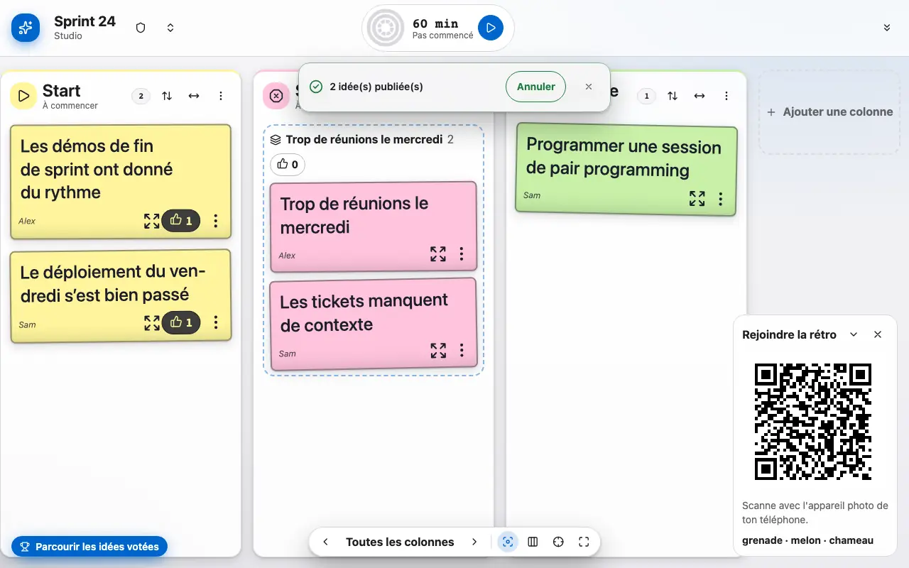
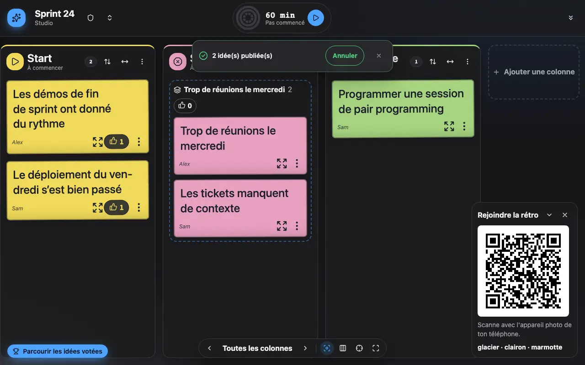

Présenter
Le mode présentation met une colonne en avant pour l’écran de la salle.
1 Le mode présentation agrandit la colonne en cours.
Le mode présentation met une colonne en avant pour l'écran de la salle, avec un pointeur laser pour montrer une idée. Échap pour en sortir.

